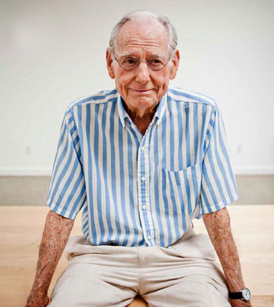

Biography

(November 15, 1920 ~ Present )
Wayne Thiebaud showed an interest in the arts, especially the theater, during his early years in Long Beach, California. As a young man, he worked at various jobs in order to develop his artistic skills, including as a cartoonist, a show-card letterer, and a stage technician.
Thiebaud served in the United States Air Force during World War II and was assigned to Special Services. For most of his tour, he edited training films and photographed beauty contests and award ceremonies. After his release from these duties in 1945, Thiebaud worked as a commercial artist for several years before making a commitment to a career in painting. He began his formal artistic studies at San Jose State University, then transferred to California State University at Sacramento, where he finished both his B.A. and M.A. in studio art and art education.
As both a teacher and a painter, Thiebaud has been interested in realism and particularly admires the paintings of Johannes Vermeer, Jean-Siméon Chardin, and Thomas Eakins, all artists who worked in the realist tradition. By 1960 Thiebaud had developed a distinctive visual vocabulary centered around food. His work incorporated familiar items that are often regarded, and sometimes disdained, as popular symbols of mass consumption in American society. When his paintings of pies, hot dogs, and gumball machines were first exhibited in 1962, they received wide critical acclaim and were considered indictments of America's shallow consumer culture. Yet Thiebaud has always disputed this interpretation, maintaining that his subjects are born of nostalgia rather than contempt.